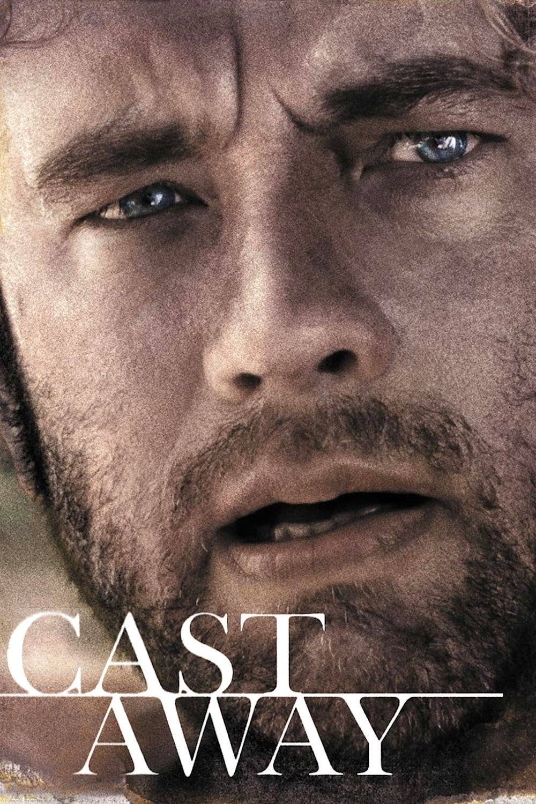

Movie Review

Cast Away directed by Robert Zemeckis is a book about a FedEx worker who gets stranded on an island. The movie displays how he survives on the island all alone. My task was to watch the movie and write a review of the movie that focused on the topic of survival. To display my understanding I wrote an essay (this can be seen down below). To write my essay I refered to the rubric and my movie review template provided by my teacher.
Analysis of Cast Away
Cast Away is an interesting watch about adventure, suspense, survival, and a little bit of romance. This film was directed by Robert Zemeckis on December 2000; ImageMovers Playtone published this 143-minute film. The most prevalent idea being expressed in the movie is that survival skills are essential to all life on Earth and without those skills, in nature we would die. This movie was an amazing film due to the magnificent character portrayal along with the acting skills and the conflicts being represented in this film, specifically the conflict between man and nature.
Cast Away is about Chuck Noland, a FedEx worker that has to travel to Malaysia on Christmas in 1995. On his flight to Malaysia, bad weather causes his plane to crash into the South Pacific Ocean. The morning after he crashes, he lands ashore on an island. A few FedEx packages wash up on the beach and he opens most of them as they contain useful resources. After being on the island for a few months he encounters loneliness, he finds a volleyball, draws a face on it, and names him Wilson. Chuck starts to get a little delusional and regularly talks and has arguments with Wilson.
Cast Away is a great film through the acting skills of the main character which gave a sense of realism. Cast Away was an entertaining film to watch through its portrayal of Chuck Noland. Tom Hanks played Chuck Noland exceptionally well and had the audience convinced that Chuck was a lost survivor on an unknown island. This is seen in the film when Chuck Noland is finally makes a fire. The emotion he has in his eyes after making the fire seemed like he had received a miracle. Hanks made this moment very realistic and if the audience had not already known it was a movie, they would have been convinced that the scene was a reality. Most of the audience would felt the same way that Chuck is feeling through his acting which allows the audience to feel empathy for Chuck, especially during Chucks' troubles in the island.
The main conflict in the movie is man vs nature. This movie demonstrates how there can be many natural forces against mankind. This movie also illustrates how to face these forces and to deal or conquer them. At one point of the movie, there was a big ship in the ocean; after seeing the ship Chuck decided to take an emergency raft and row towards the ship for help. Unfortunately, in the process of rowing to the ship, tidal waves kept coming, which resulted in him eventually giving up. Chuck represented the conflict was there on the island. He also shows how he dealt with the uncontrollable outside forces that were acting completely against him. To be able to conquer the conflict, Chuck knew he had to make something bigger and better than the emergency raft, which he did and was successful that ensured that the conflict did not affect him.
This movie was definitely an intriguing watch, during the whole movie the viewers' eyes were glued to the screen and they would did not want to miss a single second of it. Everyone should definitely take two hours out of their time to watch this movie because of three reasons: its main conflict, its cinematography, and Chucks' portrayal. The main conflict in the story: man vs nature, was prevalent and there were many instances of the conflict in the movie. The cinematography was very well done as every single shot was taken with purpose. The movie never lacked nay scenes or elongated any scenes. It was seen that many hours went into planning the shots, and the post production editing. Tom Hanks definitely portrayed Chuck very well through his acting skills. The audience for this movie would be anyone aged 13 or older, as this is a movie any member of a family would understand and love to watch. Since this movie was made 15 years ago, the filmography and its quality are very high and it is unexpected that this movie would be such high quality. According to the MPAA rating, Cast Away is a PG-13 movie. Overall this movie was a success with many fans of the movie, and it made 4.7 times of its budget.